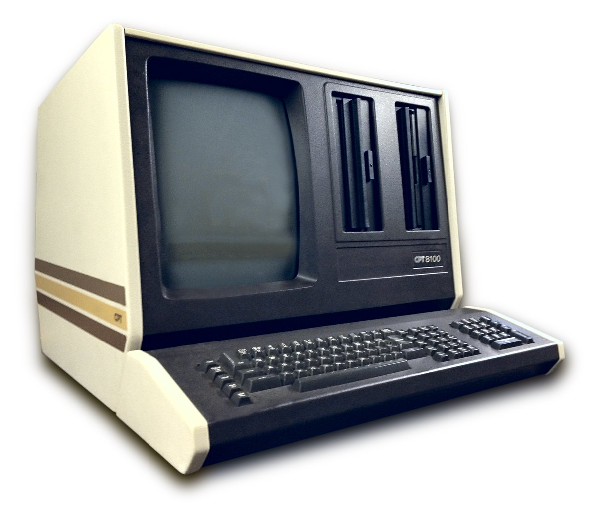
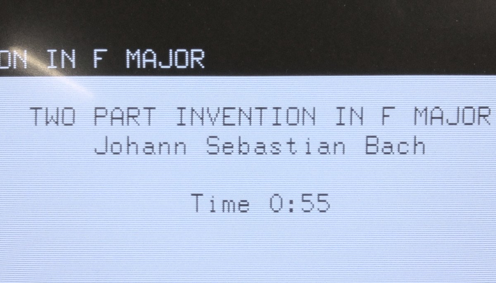

CPT 8100 Word Processor
A dedicated word processor whose editing lives on labeled keys — IN, OUT, PRINT, and an OOPS key that undoes your mistake in one physical press

Overview
The CPT 8000 (1976) and its successor the CPT 8100 (1979) were dedicated stand-alone word-processing terminals from CPT Corporation, a Hopkins, Minnesota company that grew into a major producer of office text machines through the early 1980s. Instead of a personal computer running word-processing software, the CPT was one physical object: a custom keyboard, a full-page green-phosphor CRT, and two 8-inch floppy drives arranged as a single desk terminal. Editing was not a menu, a command string, or a pointing gesture — it was the physical press of named keys laid out alongside the QWERTY block. Production and support continued through the mid-1980s, and tens of thousands of units were installed, making the CPT one of the defining examples of the dedicated word-processor era before the PC.
Deep dive
The CPT's editing keyboard carried a row of dedicated labeled keys — IN and OUT (to set and move text blocks), PRINT, and the memorable OOPS key for undo. Where modern editing points, clicks, or types commands, the CPT operator performed surgery by committing to a named key. Want to move a block? You mark it IN and OUT on the physical board, then invoke the move. Made a mistake? You press OOPS and the machine backs out of it. The interaction collapsed the abstraction of an editing command into a single, labeled, tactile action — a weirdly embodied alternative to both the menu and the command line.
The 8100 used a full-page portrait CRT with a long-persistence green phosphor, sized and oriented to show an entire letter-sized page of text at once. Because the display was rendered in single-generic fonts and showed the document as stored rather than as it would print (true WYSIWYG was years away), the operator lived with a persistent tension between what the screen said and what the printhead would do — the pre-WYSIWYG page-conflict made physical by a monitor deliberately shaped like paper. The long-persistence phosphor meant the operator watched lines trace in as the screen redrew, a visual rhythm unique to these office terminals.
The machine stored text on a pair of 8-inch floppy disks. The work flow — mount the system disk, load your document disk, page up and down on a full-page screen, and print — made the CPT a self-contained typing-and-editing appliance rather than a general computer. It anticipated the way later office software would treat editing, but expressed it in a box whose whole interface was keyboard and CRT, with no other system around it.
The museum's text family runs one key at a time (Microwriter's five-key chord, Velotype's two-hand syllables) or hides editing in software commands (Canon Cat's HyperKey, Brother WP1's edit-before-print). The CPT is the opposite flavor of the same impulse: editing made into a labeled physical keyboard with an undo key literally called OOPS. It is the dedicated-word-processor terminal that turned document surgery into a set of named punches — a distinct interaction from a typewriter, a computer, and every other text device already in the collection.
Team & pioneers
- CPT Corporation Dedicated word-processor maker based in Hopkins, Minnesota; produced the 8000 (1976) and 8100 (1979)
Media
